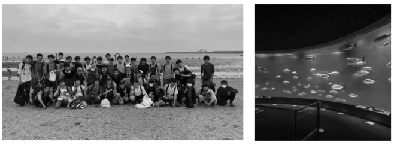
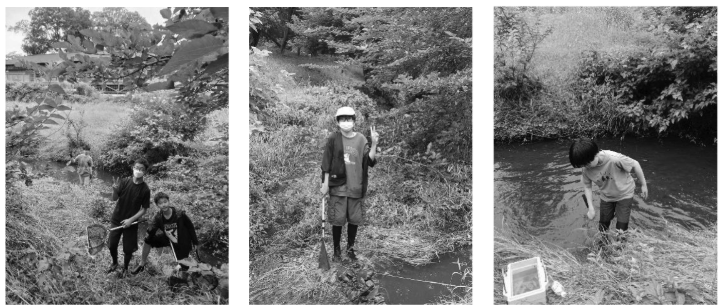
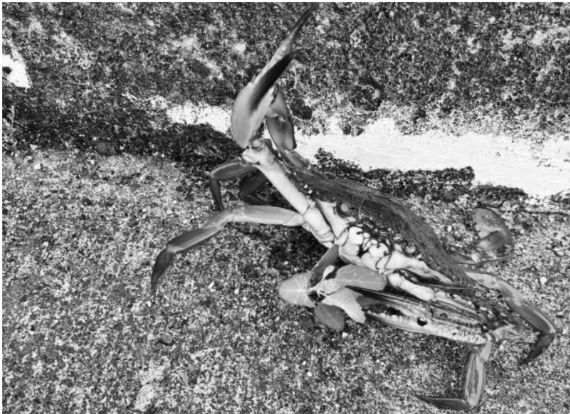
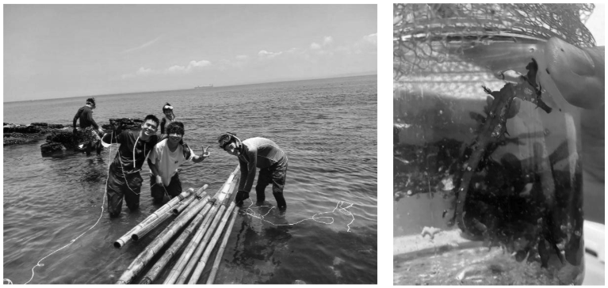

特別編
夏の採集まとめ５月~９月
中学三年 宮原 功貴


1.5 月 31 日 新入生歓迎会 葛西臨海公園
一年生が生物園芸部で経験する最初のイベントで、部活の仲の良い友達を作るチャンスでもあります。午前中は葛西臨海公園の砂浜で生物観察を楽しみ、午後からは場所を移動して葛西臨海水族園を見学しました。
2.6 月 7 日 野川公園ガサガサ採集 15 名
梅雨真っ最中ということもあり小雨が降っていましたが決行しました。主な成果は、アメリカザリガニ、タモロコ、フナ、ドジョウ、オイカワ、メダカ等々です。中 1 もよく頑張ってくれたと思います。
3.6 月 14 日 早川港釣り 5 名
波が常に穏やかで安全な早川港の湾奥で釣りをしました。大きめのアカハタがかかったのですが、惜しくもバラされてしまいました(釣り用語で針が外れること)。主な釣果は、イソカサゴ、カサゴ、ササノハベラ、ニシキベラ、ソラスズメダイ、ネンブツダイと、ほぼ最大クラスのガザミ(ワタリガニ)です。まぐれで釣り針にかかったみたいですが、港のような深い場所だとガザミのような大型のカニの密度が高いように感じられます。


4.9 月 15 日 三浦半島 磯採集、シュノーケル、釣り 17 名
この日に今年の夏の始まりを実感できたと言っても過言ではないくらい、海水浴にベストな猛暑でした。しかしながらも、観音崎の磯は流れも強く少し沖に行くだけで急激に深くなるので、細心の注意を払う必要がありました。釣り組の釣果はカサゴ、ムラソイ、ダイナンギンポ、ベラ。磯遊びではタツノオトシゴ、クジメ、カサゴ、クモハゼ、ナベカ、キヌバリ、イトマキヒトデ、スナモグリ、アナハゼ、ギンポ系多数が捕れました。タツノオトシゴの飼育は難しいことで有名で、一か月ほど飼育することができたのですが、結局星になってしまいました。
→漂流していた竹を使って筏を作ろうとしています
5.下田合宿と八丈島旅行については模造紙の展示を行っています。
6.8 月 7 日 葛西臨海公園夜採集 19 名
名前の通り、葛西の海辺と小さな森を散策して甲殻類や虫を捕まえる採集です。特に難しいスキルも要求されないので生物を捕るのが苦手な子も散歩がてら楽しむことができました。主な成果はアカテガ二、クロベンケイガ二、アシダカグモ、チョウセンカマキリ、カブトムシ、コクワガタ、オニグモ、ナナフシです。
7.まとめ
このように生物園芸部には様々な採集があります。生物園芸部は他の学芸部と比べても先輩後輩の交流が多いのですが、その理由の一つは採集という、皆で一つのイベントを全力で楽しむ機会があるからだと勝手に思っています。その点で、生物採集というのはスポーツと同じように、他者とのつながりを強くしているのではないでしょうか。素晴らしい採集を企画してくれた先輩たちに感謝をすると共に、来年の採集をより良いものにしていこうと思っています。